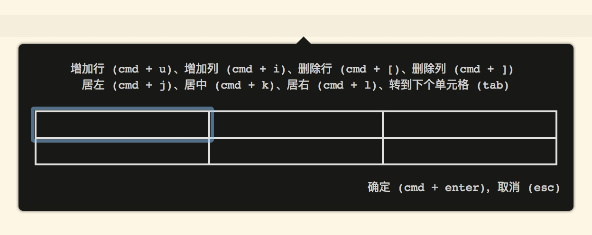
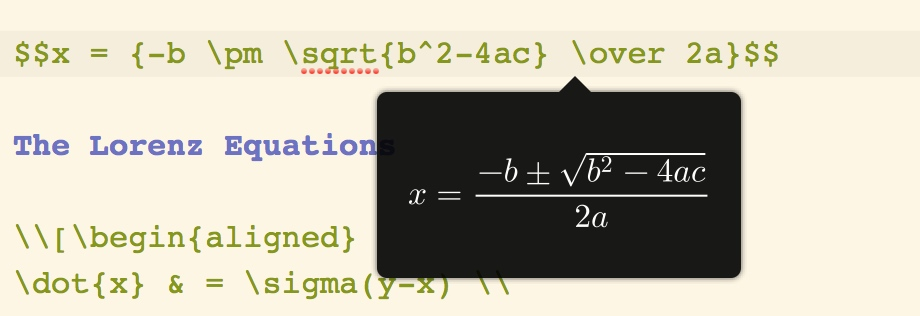
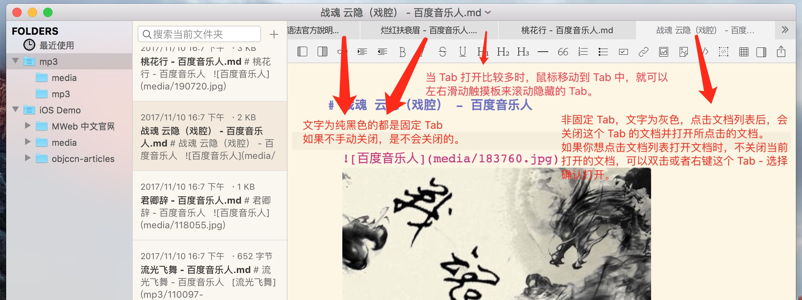
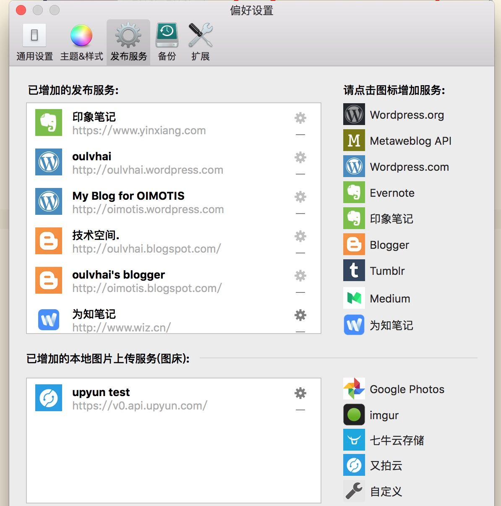
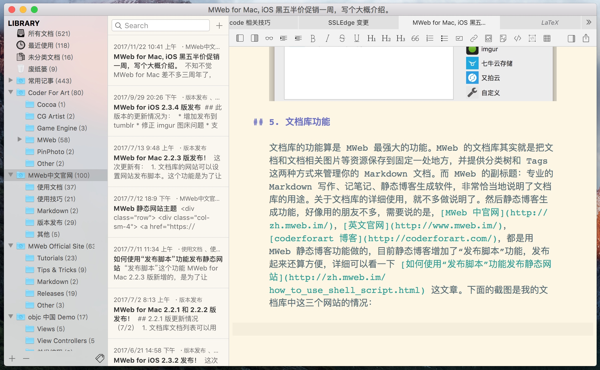

不知不觉 MWeb for Mac 差不多三周年了，iOS 版也差不多一周年了，时间过得飞快。记得当时离职入坑 Mac/iOS 开发，我一并注册了 coderforart.com 这个域名，并做为自己的博客，我所做的软件的标识也是用 coderforart。这么多年过去了，Mac/iOS 学了个皮毛，博客也没更新文章，然后 coder for art，当时想法很好，然而在 art 方面却是啥也没学，目前已经定性为：我不适合 art。 我心中对 art 的执念也是越发淡薄了。
MWeb 倒是坚持不断小更新一下，但这很大一部分原因在于用户的建议和需求，非常感谢你们。有很多需求我看了，但是没实现，这其中有的是技术的原因，有的是我认为没必要做的。虽然我可以做得更好，比如说花精力反馈给每个提需求的朋友没实现的原因，但是我没这样做，因为还不如直接花在改进产品上。总之，给 MWeb 反馈的朋友，非常感谢你们，然后有些情况，请见谅了！
还有很多需要感谢的，比如说推荐 MWeb 的媒体和朋友，非常感谢你们！我文笔太渣，就不多说了，下面选几个 MWeb 代表性的功能介绍一下。
1. MWeb 对 Markdown 编辑上的一些小改进
1.1 对插入图片的改进
MWeb 对插入图片支持非常全面，可以直接把图片拖拽进编辑器来插入图片，截图时可以直接用 CMD + V 来插入剪切板中的图片，插入的图片会直接显示在编辑器中，方便查看。另外还支持图床功能，是文档完成后把图片上传还是插入图片时自动上传都支持，详细的情况可以看一下 MWeb Mac 版和 iOS 版图片及图床使用完全指南 这篇文章。
另外 MWeb 还支持图片大小和对齐的语法。
官方 Markdown 和 GFM 都不支持图片大小控制及对齐设置，MWeb 引入的特别的语法来设置图片宽度和居左、居右、居中。如： 这样表示设置图片宽度为 450。其中 -w450 为设置语法，生成 HTML 时会自动移除。w 表示设置宽度，居左为：-l400，居右为 -r400，居中为 -c400，比如设置一图片宽度为 500 并居中：。可以看出，MWeb 引入的语法的特点是兼容原来的语法和仅支持设置宽度。
1.2 对表格插入及编辑的改进
首先要说的是 MWeb 对表格编辑的小改进，点工具栏的插入表格按钮或者用 Ctrl + Shift + T，即可弹出如下图的插入表格窗口：

其它说明：这个功能也支持对已有 Markdown 表格的编辑，方法就是光标移动到要编辑的表格文本中，点插入表格或者 Ctrl + Shift + T。
1.3 对 LaTeX 的改进
如下图，当光标在 LaTeX 语法中时，会自动弹出预览窗口来预览 LaTeX 公式来辅助 LaTeX 输入和预览。

1.4 把 HTML 粘贴为 Markdown
这个功能使用方法是：在网页中选中你需要复制的那部分，比如说选择整个网页中的文章部分，然后 CMD + C 复制，再回到 MWeb 中，用菜单：编辑 - 把 HTML 粘贴为 Markdown，这样就会把选中的文章转为 Markdown 并粘贴，如果是在文档库中或者外部模式引入的文件夹内的文档，还会把文章中的图片自动下载到本地。这个功能一般情况下还是非常有用的，当然，由于 HTML 比较复杂，有时候会出问题。
2. MWeb 外部模式的一些用法
MWeb 有两种模式，文档库模式和外部模式，一般情况下，使用外部模式就可以满足大部分需求了。外部模式是要先引入文件夹，然后再编辑文件夹内的文档，这样就比较好的解决了 Markdown 插入图片的问题，另外 Octopress, JekyII, Hexo 等静态博客也能非常方便地插入图片。详细可以看 MWeb 1.4 新功能介绍一：引入文件夹到 MWeb 中管理，支持 Octpress、Jekyll 等静态博客拖拽插入图片和实时预览 这篇文章，按这个办法，其实也很好地支持 gitbook。目前 MWeb 到了 2.2.8 版，对外部模式也只是增加支持了配置引入的文件夹内的文档插入图片时自动上传至图床。
3. MWeb 的标签（Tab）功能
MWeb 从 2.0 开始支持多 Tab，Tab 的设计比较像 Sublime，我觉得这种设计非常好。我觉得可以直接用下图说明。

4. 发布到 Wordress、印象笔记等流行平台的功能
MWeb 支持把 Markdown 图文发布到多个平台，支持的平台如下图：

5. 文档库功能
文档库的功能算是 MWeb 最强大的功能。MWeb 的文档库其实就是把文档和文档相关图片等资源保存到固定一处地方，并提供分类树和 Tags 这两种方式来管理你的 Markdown 文档。而 MWeb 的副标题：专业的 Markdown 写作、记笔记、静态博客生成软件，非常恰当地说明了文档库的用途。关于文档库的详细使用，就不多做说明了。然后静态博客生成功能，好像用的朋友不多，需要说的是，MWeb 中官网，英文官网，coderforart 博客，都是用 MWeb 静态博客功能做的，目前静态博客增加了“发布脚本”功能，发布起来还算方便，详细可以看一下 如何使用“发布脚本”功能发布静态网站 这文章。下面的截图是我的文档库中这三个网站的情况：

其实还要说一下，关于 MWeb 文档库的结构。点击 MWeb 偏好设置 - 通用设置 - 文档库 - 在 Finder 中显示 可以查看 MWeb 文档库的结构。
它是由 mainlib.db 文件，docs 和 metadata 文件夹这三项组成，其中 docs 文件夹保存了每篇笔记的信息，一篇笔记一个 markdown 文档，markdown 文档内的图片等资源则保存在 docs 下的 media 文件夹内。mainlib.db 文件则保存了笔记的分类和 Tags 信息。我认为这种结构可以避免文档库丢失，因为不太可能一下删除这么多文件。更保险的办法是，使用 MWeb 偏好设置 - 备份 功能，把文档库备份到有历史记录的网盘中。
关于MWeb 文档库的同步，非常简单，就是在 MWeb 偏好设置 - 通用设置 - 文档库 中，把文档库 另存为 到网盘中即可。如果你要在 iOS 中使用文档库，可以参考：在 iOS 中如何使用 MWeb for Mac 文档库 这文章。然后 MWeb 每天会把 mainlib.db 文件备份到 ~/Library/Containers/com.coderforart.MWeb/Data/Library/Caches 这个位置，以避免同步时出现损坏的情况。
6. iOS 版 MWeb 说明
iOS 版 MWeb 有 Mac 版 MWeb 外部模式的所有功能。文档库模式的话，目前仅可以查看，编辑和新增文档，而且新增的文档只会在 未分类文档 中，暂不支持在 iOS 中归类文档并加 Tag。更详细可以查看：http://zh.mweb.im/how_to_use_home.html 这个网址。
其它
MWeb for Mac 和 iOS 目前都在半价促销中！活动结束时间为：11/29。
官网：http://zh.mweb.im/
Mac 版：https://itunes.apple.com/cn/app/mweb-pro-markdown-writing/id954188948?l=zh&ls=1&mt=12
iOS 版：https://itunes.apple.com/cn/app/mweb-pro-markdown-writing/id1183407767?l=cn&mt=8